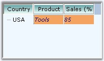

The appearance of the MultiColumnTreeView can be customized using background, foreground, border and spacing properties similar to TreeView control. The below topics are covered in this section.
SubItem Appearance
The background, foreground and border settings of a subitem can be specified using SubItem Style Editor. Refer to SubItem Styles for all the style settings.
|
[C#]
treeNodeAdvSubItem1.Background = new Syncfusion.Drawing.BrushInfo(System.Drawing.Color.SandyBrown); treeNodeAdvSubItem1.Border3DStyle = System.Windows.Forms.Border3DStyle.SunkenInner; treeNodeAdvSubItem1.BorderColor = System.Drawing.Color.SteelBlue; treeNodeAdvSubItem1.BorderSingle = System.Windows.Forms.ButtonBorderStyle.Dotted; treeNodeAdvSubItem1.BorderStyle = System.Windows.Forms.BorderStyle.FixedSingle; treeNodeAdvSubItem1.TextColor = System.Drawing.Color.Navy;
treeNodeAdvSubItem2.Background = new Syncfusion.Drawing.BrushInfo(System.Drawing.Color.SandyBrown); treeNodeAdvSubItem2.Border3DStyle = System.Windows.Forms.Border3DStyle.SunkenOuter; treeNodeAdvSubItem2.BorderColor = System.Drawing.Color.SteelBlue; treeNodeAdvSubItem2.BorderSingle = System.Windows.Forms.ButtonBorderStyle.Dotted; treeNodeAdvSubItem2.BorderStyle = System.Windows.Forms.BorderStyle.FixedSingle; treeNodeAdvSubItem2.TextColor = System.Drawing.Color.Navy; |
|
[VB.NET]
treeNodeAdvSubItem1.Background = New Syncfusion.Drawing.BrushInfo(System.Drawing.Color.SandyBrown) treeNodeAdvSubItem1.Border3DStyle = System.Windows.Forms.Border3DStyle.SunkenInner treeNodeAdvSubItem1.BorderColor = System.Drawing.Color.SteelBlue treeNodeAdvSubItem1.BorderSingle = System.Windows.Forms.ButtonBorderStyle.Dotted treeNodeAdvSubItem1.BorderStyle = System.Windows.Forms.BorderStyle.FixedSingle treeNodeAdvSubItem1.TextColor = System.Drawing.Color.Navy
treeNodeAdvSubItem2.Background = New Syncfusion.Drawing.BrushInfo(System.Drawing.Color.SandyBrown) treeNodeAdvSubItem2.Border3DStyle = System.Windows.Forms.Border3DStyle.SunkenOuter treeNodeAdvSubItem2.BorderColor = System.Drawing.Color.SteelBlue treeNodeAdvSubItem2.BorderSingle = System.Windows.Forms.ButtonBorderStyle.Dotted treeNodeAdvSubItem2.BorderStyle = System.Windows.Forms.BorderStyle.FixedSingle treeNodeAdvSubItem2.TextColor = System.Drawing.Color.Navy |
A MultiColumnTreeView with above settings is displayed below.

Figure 1191: MultiColumnTreeView with Customized Appearance
 Column
Appearance
Column
Appearance